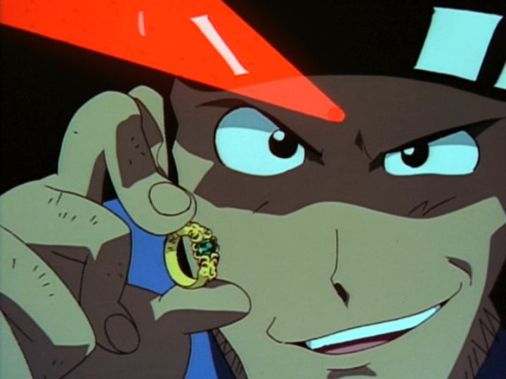

Disclaimer: This is a review of the 2000 TV film "Lupin the Third - Missed by a Dollar," also known as "Lupin the Third - $1 Money Wars."You could flip a coin to whether a "Lupin the Third" film or tv special is any good, a big gamble considering how many films there are and their length. I took a chance on the 2000 TV film "Missed by a Dollar" because... I liked the title. Watching it back-to-back after the mediocre "Secret of the Twilight Gemini," I was pleasantly surprised at how decent this adventure was.One of the strengths is the antagonists of this particular caper. This time, Lupin is after an old ring that shows up in an auction (as a joke, the auctioners think the piece of junk won't sell, before it starts racking up bids above a million dollars). It's a little-known fact that the ring is said to be a clue to the location of a mythical jewelery broach, rumored to give the power (through luck or fortune or other means) to rule the world. Even enemies like Hitlir and Lenin once seeked out the artifact. This time, the president of the World Bank (Cynthia) is after it, aided by a ruthless Russian assassin. Her plan turns out to involve starting a world war with the broach and setting up the stock market to own a monopoly, becoming overwhelmingly rich in the process. The thought of the Bank and the Stock Market being key enemies feels eternally topical, and all the more cathartic for Lupin to steal from. I also watched this in 2022, in the middle of Russia's public invasion of Ukraine, and the movie makes explicit reference to Russia's past involvement in wars for profit. It's not unusual for Russia to be a villain in fictional stories, but this story seems to be making a minor political statement in the background, and if the viewer agrees, it's a fun (if irrelevant) way to shoot a middle finger to the country. Another big strength is how this adventure manages to involve all of the usual suspects of "Lupin." Most of the recurring characters don't usually get a chance for a focus in the plot (just appearing for the sake of it before getting out of the way), but "Missed by a Dollar" gives everyone something to do. Jigen loses his favorite gun in an early job, and spends most of the movie trying to find a suitable replacement. Goemon has begun a mission of peace with a traveling missionary asking for donations, but reluctantly agrees to help Lupin and Jigen when she asks for more money. Fujiko tries a job as an actress after she was tricked into investing her entire fortune into a failing stock scheme, and has a score to settle with the Bank. At some point, Inspector Zenigata resigns from his job, and is stuck at a crossroads regarding where to go next (and when again trying to act as a cop, no longer has the credentials to do so). And Lupin's motivation for stealing this treasure? Just plain curiousity, and I'd expect nothing less. The plot takes a dramatic turn when it appears Lupin was shot and killed, complete with a funeral, giving his collegues new drive to finish the mission on his behalf (he shows up alive again not much later).  That plot is a little uneven though. When the gang has a batter sense of what's going on, the spend the second half of the movie running a large con, which involves... starting a business and getting investment. Which is suddenly dull and slow, halting the movie's pacing midway through. It's a smart story idea, it's just a lot less fun than the action that led up to it, and doesn't rebalance until towards the end (with a pretty strong ending, admittedly). There's also a recurring character Lupin is trying to woo, a French singer trying to make it in New York, likely a lose homage to Whitney Houston... she has absolutely no effect on the plot, and it's unclear why she was included in the first place. The movie's animation is also more expressive and comedic than some of the cheaper productions, so Lupin and the gang look pretty decent (despite the 90's character design tendencies to give pretty adult women realistically-massive chins). I was genuinely laughing in the early scenes of Lupin driving his car through the back-areas of New York. The tone of the movie is on the mark, mostly funny and dramatic where it counts, with only small hints of dark violence and fanservice (no nudity, although Lupin makes a good number of sexual puns). It's a shame the story wasn't able to sustain what was otherwise an unnaturally strong advanture that felt proper to what Lupin is all about. The English dub is reasonable, and was one of the later movies Funimation originally dubbed in the early 2000's. "Lupin the Third - Missed by a Dollar" is one of the stronger TV specials, and is definitely worth seeking out, espcially if you're a fan of good nostalgic animation from the late 1990's. It isn't perfect, but it's smart, and befits the correct tone for the franchise.
- "Ani" More reviews can be found at : https://2danicritic.github.io/ Previous review: review_Lupin_the_Third_-_Jigen's_Gravestone Next review: review_Lupin_the_Third_-_Part_I